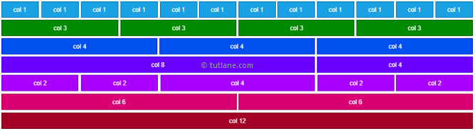

Recursos interessantes:
Grid System
O bootstrap utiliza um sistema de grid que divide as rows em 12 colunas. Assim, é possível montar layouts responsivos de forma mais simplificada e simples.
Um exemplo de aplicação seria esses cards que você está vendo agora.
Design Responsivo

O bootstrap permite que você defina quantas colunas um elemento irá ocupar de acordo com a tamanho da tela. Por exemplo, você pode definir para um elemento ocupar 6 colunas em uma resolução e 12 colunas em outra resolução.
Um exemplo de aplicação é a div do carousel desse site.
Classes
O bootstrap libera uma série de classes que podem ser utilizadas para as mais diversas utilidades. Nesse caso, trouxe duas das mais usadas, as classes que definem margin e padding.
Um exemplo de aplicação é essa div de cards, que possui um p-5.
Componentes
O bootstrap disponibiliza uma gama de componentes. Dentre os elementos decidimos trazer alguns exemplos que são recorrentes no cenário de desenvolvimento de aplicações web para agilizar e simplificar o processo. Então, o primeiro elemento é a navbar que, além de ser um elemento recorrente em sites, é feita em layout totalmente responsivo e pode ser alterada com css e html para se enquadrar ao seu objetivo.
Um exemplo de aplicação é a navbar utilizada nesse site.
Componentes

Outro elemento interessante é o carousel. O bootstrap disponibiliza uma série de variedas que geralmente irão atender a sua necessidade.
Um exemplo de aplicação é o próprio carousel desse site.
Componentes
O último elemento que decidimos citar aqui é o modal. O bootstrap disponibiliza vários modelos de modal que vão atender as suas demandas.
Um exemplo de aplicação é o modal que aparece ao clicar no botão integrantes desse site.